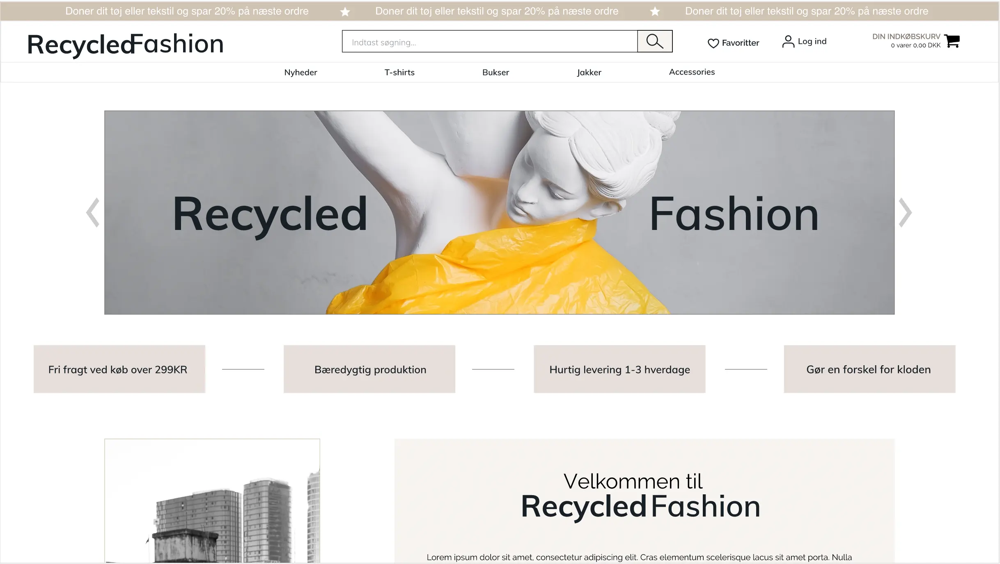

TEMA 3 grundlæggende ux
03.02.02
Løsning
Se prototypen her I denne opgave fik vi en forståelse for samspillet mellem brugere og brugergrænseflader, samt hvilke teorier, værktøjer og metoder vi kan benytte til research, design og test i en digital produktudvikling.
Vi fandt ud af gennem disse research og tests, at samspillet er vigtigt, idet designvalg og produktudvikling baseres på konkrete indsigter, som vi lærte gennem indsamlet data, som bl.a. desk research, surveys, observation og interview. Derudover er det også vigtigt for produktudviklingen at have forståelse for konceptet, såsom afsender, modtager og målgruppe.
Vi udarbejdede en prototype i XD, med fokus på de indsigter og indsamlede data, vi tidligere lavede. Derigennem kom jeg frem til mit endelige resultat af prototype. Jeg ville gerne lave et luksuriøst site, da up- og recycled tøj, sagtens kan være godt og luksuriøst, på trods af dens tidligere ejer valgte at give tøjet videre.
Jeg prøvede at gøre min prototype meget simpel og stilren, så man derved følte den var let og overskuelig. Gennem the five act interview fandt jeg frem til, at min teori var korrekt. Jeg fik god respons på mange af mine features, som gjorde brugeroplevelsen god og let for brugeren.